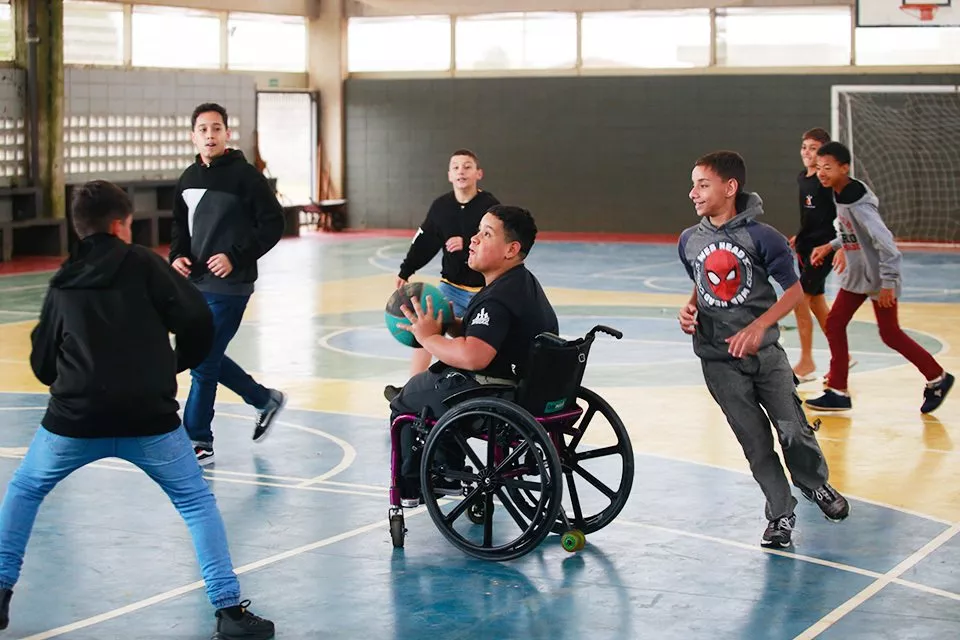

A acessibilidade não é apenas uma obrigação legal ou um item de planejamento urbano; ela é uma necessidade humana que promove a dignidade, a igualdade e a inclusão social. Embora frequentemente associada a pessoas com deficiência, os benefícios da acessibilidade se estendem a todos, criando cidades, serviços e tecnologias mais intuitivos e acolhedores.
A Acessibilidade e o Direito de Pertencer
Pessoas com deficiência enfrentam desafios diários que muitas vezes passam despercebidos pela maioria. Desde acessar um transporte público até realizar tarefas básicas, a falta de acessibilidade cria barreiras invisíveis que limitam a participação na sociedade. Tornar espaços e serviços acessíveis é um passo essencial para garantir que todos tenham o direito de pertencer e participar plenamente da vida em comunidade.
Acessibilidade nos Pequenos Detalhes
-
Cardápios em braille
Facilita a escolha de refeições em restaurantes para pessoas com deficiência visual.
-
Sinalização inclusiva
Símbolos claros e descrições em alto-relevo são úteis não apenas para pessoas com deficiência, mas também para turistas e idosos.
-
Interatividade adaptada
Totens de autoatendimento com comandos por voz ou touchpads acessíveis tornam serviços mais democráticos.
Impacto da Acessibilidade no Comércio e Serviços
-
Espaços acessíveis
Lojas e restaurantes que possuem rampas, banheiros adaptados e corredores espaçosos atraem mais clientes.
-
Atendimento personalizado
Funcionários treinados para lidar com diferentes tipos de deficiência demonstram respeito e empatia, gerando fidelidade do cliente.
-
Tecnologia assistiva em serviços
Websites de e-commerce acessíveis e aplicativos compatíveis com leitores de tela são diferenciais competitivos.
O Papel da Comunidade na Acessibilidade
A acessibilidade não depende apenas de políticas públicas ou da iniciativa privada. Comunidades desempenham um papel essencial na promoção de ambientes mais inclusivos. Pequenas ações, como ajudar um vizinho com mobilidade reduzida a chegar em casa ou organizar eventos acessíveis em igrejas e centros comunitários, criam uma cultura de acolhimento e inclusão.
Educação como Catalisadora da Acessibilidade
-
Projetos pedagógicos sobre acessibilidade
Estudantes podem participar de atividades que simulem os desafios enfrentados por pessoas com deficiência.
-
Infraestrutura inclusiva
Instituições de ensino com salas, bibliotecas e áreas de convivência adaptadas mostram, na prática, como a acessibilidade beneficia a todos.
-
Atividades esportivas inclusivas
Jogos adaptados promovem a integração e ajudam a desmistificar preconceitos.
Transformando Cidades em Espaços para Todos
-
Calçadas e passarelas contínuas
Espaços livres de obstáculos beneficiam cadeirantes, idosos e pessoas com carrinhos de bebê.
-
Transporte integrado
Ônibus, metrôs e estações devem oferecer soluções como elevadores, rampas e assentos prioritários.
-
Áreas de lazer inclusivas
Parques com brinquedos adaptados e trilhas acessíveis promovem convivência e saúde para todos.
Inovação e Acessibilidade: O Futuro da Inclusão
A tecnologia tem sido uma aliada poderosa na promoção da acessibilidade. Inovações como aplicativos que auxiliam na locomoção urbana, dispositivos de realidade aumentada para pessoas com deficiência visual e tradutores automáticos de Libras tornam a inclusão mais eficiente e prática.
Conclusão
A acessibilidade no cotidiano é um caminho para a igualdade. Ela transforma vidas, elimina barreiras e cria uma sociedade onde todos têm a oportunidade de viver com dignidade e independência. Não é uma questão de caridade, mas de justiça. Ao promover a acessibilidade, contribuímos para um mundo mais humano, solidário e equilibrado, onde as diferenças não são vistas como limitações, mas como parte essencial da diversidade que nos enriquece.